CODING AGENTS AS PIXEL WORLD MODELS
traex/GPT-6.1-Sol · common50_0005
点击播放 · 原生 RGB 像素
逐轮保存的候选
回放视频、检查图与代码变化。
每份候选均可单独播放。实际图片检查记录在下方工具轨迹中。
候选 01播放与检查图
点击播放 · 原生 RGB 像素
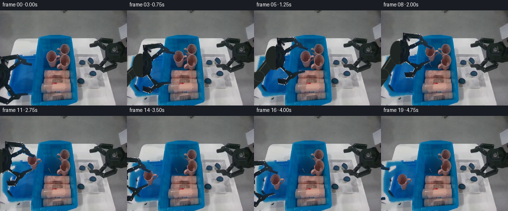
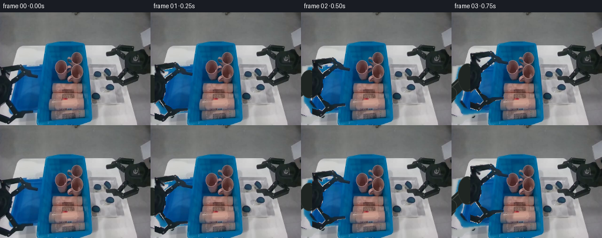
展开代码变化
--- 上一保存版本
+++ 本次保存版本
@@ -0,0 +1,151 @@
+from pathlib import Path
+import math
+import numpy as np
+from PIL import Image, ImageDraw, ImageFilter
+from artifact_io import save
+
+ROOT=Path(__file__).resolve().parent
+W,H=256,192
+SOURCE=Image.open(ROOT/'first_frame.png').convert('RGB')
+a=np.asarray(SOURCE).astype(float)
+yy,xx=np.mgrid[:H,:W]
+
+def polygon(points):
+ im=Image.new('L',(W,H));ImageDraw.Draw(im).polygon(points,fill=255)
+ return np.asarray(im).astype(float)/255
+
+def grow(mask, n=1):
+ return np.asarray(Image.fromarray(np.uint8(mask*255)).filter(ImageFilter.MaxFilter(n*2+1))).astype(float)/255
+
+# Independent rigid link groups cut from the reference image.
+up_region=polygon([(-3,94),(4,90),(34,87),(43,94),(50,100),(65,104),(65,111),(49,112),(39,107),(19,125),(5,127),(-3,116)])
+lo_region=polygon([(-3,147),(9,147),(19,161),(29,166),(57,165),(58,172),(39,174),(31,179),(23,181),(16,189),(8,191),(-3,186),(-3,174),(9,178),(18,171),(1,159)])
+palm_region=polygon([(-3,107),(5,109),(14,118),(17,124),(18,140),(13,152),(4,158),(-3,160)])
+# The object's black, graphite surface is cleanly separated from the blue tray.
+dark=((a[:,:,2]<81)&(a[:,:,1]<82)&(a[:,:,0]<84)).astype(float)
+robot_region=np.maximum.reduce([up_region,lo_region,palm_region])
+robot_core=dark*robot_region
+robot_mask=grow(robot_core,1)*robot_region
+# Retain photographed boundaries and round hardware rather than scaling links.
+up_mask=robot_mask*up_region*(1-palm_region)
+lo_mask=robot_mask*lo_region*(1-palm_region)
+palm_mask=robot_mask*palm_region
+
+# Build the newly exposed table and tray from the visible surfaces in this frame.
+# A smoothly extended surface patch is used only where the gripper was originally.
+tray_outer=polygon([(12,93),(74,89),(71,150),(65,169),(19,174),(5,151),(5,126)])
+tray_inner=polygon([(18,101),(70,98),(66,155),(62,162),(22,166),(11,148),(11,125)])
+# Interior blue texture copied from the unoccluded middle of the same tray.
+tx=np.clip(27+(xx%28),27,58)
+ty=np.clip(115+((yy-100)%42),115,157)
+texture=a[ty,tx]
+# Very low-amplitude observed shading is preserved in the patch.
+blue=np.zeros_like(a);blue[:]=[8,96,140]
+blue=blue*.55+texture*.45
+blue[:,:,1]+=4*np.clip((xx-8)/60,0,1)
+blue[:,:,2]+=3*np.clip((xx-8)/60,0,1)
+table=np.zeros_like(a)
+for c,base in enumerate([188,191,190]):
+ table[:,:,c]=base-0.18*(yy-115)-.05*(40-xx)
+replacement=table*(1-tray_outer[:,:,None])+np.array([7,109,158])*tray_outer[:,:,None]
+replacement=replacement*(1-tray_inner[:,:,None])+blue*tray_inner[:,:,None]
+clean=a.copy()
+# Extend the removal matte just enough to eliminate the stationary edge fringe.
+remove=grow(robot_mask,1)*polygon([(-2,86),(39,85),(68,100),(68,113),(43,112),(20,128),(24,151),(32,163),(60,163),(60,176),(34,182),(19,192),(-2,192)])
+clean=clean*(1-remove[:,:,None])+replacement*remove[:,:,None]
+
+# Diffuse along the old occlusion boundary for the native soft camera texture.
+# The replacement itself is fixed in every subsequent frame.
+blend_region=(remove>.01)
+for k in range(100):
+ nbr=(np.roll(clean,1,0)+np.roll(clean,-1,0)+np.roll(clean,1,1)+np.roll(clean,-1,1))/4
+ # Keep a weak, geometry-aware anchor to the real blue/table surfaces.
+ clean[blend_region]=.88*nbr[blend_region]+.12*replacement[blend_region]
+
+# The leftmost pink mug, including its right-facing handle.
+mug_poly=polygon([(103,80),(109,81),(113,85),(115,90),(119,90),(122,91),(122,96),(118,100),(113,104),(113,110),(110,114),(104,116),(99,114),(96,108),(94,101),(92,96),(93,89),(97,84)])
+contrast=a[:,:,0]-a[:,:,2]
+mug_alpha=np.clip((contrast+8)/19,0,1)*mug_poly
+# Exclude the blue negative space within the handle.
+mug_alpha[mug_poly==0]=0
+mug_remove=grow((mug_alpha>.1).astype(float),1)
+# Fit a smooth bin-floor color to nearby blue pixels, never to other products.
+blue_samples=(xx>=85)&(xx<=123)&(yy>=75)&(yy<=120)&(a[:,:,2]>a[:,:,0]+32)&(mug_remove==0)
+features=np.stack([np.ones_like(xx), (xx-103)/25,(yy-99)/25,((xx-103)/25)**2,((yy-99)/25)**2,((xx-103)*(yy-99))/625],-1)
+coef=np.linalg.lstsq(features[blue_samples],a[blue_samples],rcond=None)[0]
+fill=features@coef
+fill=np.clip(fill,[0,45,67],[32,112,153])
+# Only the mug silhouette and its immediate contact shadow become bin surface.
+mug_remove*=polygon([(91,79),(115,79),(124,88),(124,101),(115,110),(115,118),(95,118),(91,101)])
+clean_mug=clean*(1-mug_remove[:,:,None])+fill*mug_remove[:,:,None]
+
+# RGBA sprites; each link is rotated, not distorted.
+def sprite(mask):
+ return Image.fromarray(np.dstack([np.uint8(a),np.uint8(np.clip(mask,0,1)*255)]),'RGBA')
+upper=sprite(up_mask);lower=sprite(lo_mask);palm=sprite(palm_mask)
+# Remove any blue from semi-transparent edge pixels in the mug sprite.
+mug_rgb=a.copy(); alpha=np.maximum(mug_alpha[:,:,None],.2)
+back=np.clip(fill,0,255)
+mug_rgb=np.clip((a-back*(1-mug_alpha[:,:,None]))/alpha,0,255)
+mug=Image.fromarray(np.dstack([np.uint8(mug_rgb),np.uint8(mug_alpha*255)]),'RGBA')
+
+# Super-sampled geometric connecting forearm hidden beneath the photographed palm.
+def draw_arm(canvas,dx,dy):
+ S=3
+ lay=Image.new('RGBA',(W*S,H*S));d=ImageDraw.Draw(lay)
+ wrist=np.array([dx-5,dy+134.])
+ anchor=np.array([-27.,169.])
+ elbow=np.array([max(-16.,dx-34.),146+dy*.35])
+ def rod(p,q,r,color):
+ p=np.array(p)*S;q=np.array(q)*S
+ v=q-p;n=np.array([-v[1],v[0]])/(np.linalg.norm(v)+1e-6)*r*S
+ d.polygon([tuple(p+n),tuple(q+n),tuple(q-n),tuple(p-n)],fill=color)
+ d.line([tuple(p-n*.6),tuple(q-n*.6)],fill=(66,71,67,255),width=2*S)
+ rod(anchor,elbow,12,(34,39,37,255));rod(elbow,wrist,10,(31,37,35,255))
+ for p,r in [(elbow,11),(wrist,14)]:
+ x,y=p*S;d.ellipse((x-r*S,y-r*S,x+r*S,y+r*S),fill=(31,37,34,255),outline=(57,63,59,255),width=S)
+ # The portion behind the reference palm extends the clipped silhouette naturally.
+ cx,cy=(dx-6)*S,(dy+134)*S
+ d.ellipse((cx-15*S,cy-24*S,cx+17*S,cy+24*S),fill=(31,37,34,255),outline=(44,50,46,255),width=S)
+ d.arc((cx-12*S,cy-21*S,cx+14*S,cy+21*S),-80,80,fill=(59,65,58,255),width=S)
+ canvas.alpha_composite(lay.resize((W,H),Image.Resampling.LANCZOS))
+
+def transform(im,dx,dy,angle=0,pivot=(0,0)):
+ th=math.radians(angle);c=math.cos(th);s=math.sin(th)
+ px,py=pivot
+ # inverse of rotation about a fixed mechanical pin, followed by translation
+ coeff=(c,s,px-c*(px+dx)-s*(py+dy),-s,c,py+s*(px+dx)-c*(py+dy))
+ return im.transform((W,H),Image.Transform.AFFINE,coeff,Image.Resampling.BICUBIC)
+
+def shadow(canvas,cx,cy,lift=0):
+ layer=Image.new('RGBA',(W,H));d=ImageDraw.Draw(layer)
+ spread=1+lift*.03;op=int(50/(1+lift*.045))
+ d.ellipse((cx-10*spread,cy-3*spread,cx+10*spread,cy+3*spread),fill=(7,17,21,op))
+ canvas.alpha_composite(layer.filter(ImageFilter.GaussianBlur(2+lift*.03)))
+
+# Palm travel and articulated jaw closure. The mug is rigidly attached for carry.
+poses=[(0,0,0,0),(7,-4,0,0),(19,-12,0,0),(32,-23,0,0),
+ (41,-33,0,0),(44,-38,6,-8),(44,-38,14,-18),
+ (44,-43,14,-18),(39,-49,14,-18),(29,-50,14,-18),
+ (17,-47,14,-18),(5,-43,14,-18),(-6,-34,14,-18),
+ (-13,-23,14,-18),(-17,-12,14,-18),(-17,-3,14,-18),
+ (-17,-3,8,-10),(-26,-7,3,-4),(-38,-5,0,0),(-48,-2,0,0)]
+frames=[]
+for i,(dx,dy,ua,la) in enumerate(poses):
+ if i==0:
+ frames.append(np.asarray(SOURCE).copy());continue
+ carry=i>=7
+ bg=clean_mug if carry else clean
+ canvas=Image.fromarray(np.uint8(np.clip(bg,0,255)),'RGB').convert('RGBA')
+ if carry:
+ mx,my=(dx-44,dy+38) if i<=15 else (-61,35)
+ lift=max(0,-my)
+ shadow(canvas,104+mx,114+my+min(8,lift*.7),lift)
+ canvas.alpha_composite(transform(mug,mx,my))
+ draw_arm(canvas,dx,dy)
+ canvas.alpha_composite(transform(palm,dx,dy))
+ canvas.alpha_composite(transform(upper,dx,dy,ua,(1,117)))
+ canvas.alpha_composite(transform(lower,dx,dy,la,(1,150)))
+ frames.append(np.asarray(canvas.convert('RGB')))
+frames=np.asarray(frames,dtype=np.uint8)
+save(frames,ROOT)
候选 02播放与检查图
点击播放 · 原生 RGB 像素

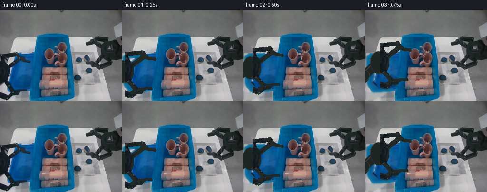
展开代码变化
--- 上一保存版本
+++ 本次保存版本
@@ -18,23 +18,21 @@
return np.asarray(Image.fromarray(np.uint8(mask*255)).filter(ImageFilter.MaxFilter(n*2+1))).astype(float)/255
# Independent rigid link groups cut from the reference image.
-up_region=polygon([(-3,94),(4,90),(34,87),(43,94),(50,100),(65,104),(65,111),(49,112),(39,107),(19,125),(5,127),(-3,116)])
-lo_region=polygon([(-3,147),(9,147),(19,161),(29,166),(57,165),(58,172),(39,174),(31,179),(23,181),(16,189),(8,191),(-3,186),(-3,174),(9,178),(18,171),(1,159)])
-palm_region=polygon([(-3,107),(5,109),(14,118),(17,124),(18,140),(13,152),(4,158),(-3,160)])
-# The object's black, graphite surface is cleanly separated from the blue tray.
-dark=((a[:,:,2]<81)&(a[:,:,1]<82)&(a[:,:,0]<84)).astype(float)
-robot_region=np.maximum.reduce([up_region,lo_region,palm_region])
-robot_core=dark*robot_region
-robot_mask=grow(robot_core,1)*robot_region
-# Retain photographed boundaries and round hardware rather than scaling links.
-up_mask=robot_mask*up_region*(1-palm_region)
-lo_mask=robot_mask*lo_region*(1-palm_region)
-palm_mask=robot_mask*palm_region
+# Hand-traced link boundaries preserve complete rigid pieces and joint holes.
+up_region=polygon([(-3,91),(4,92),(33,89),(36,88),(40,91),(44,97),(48,100),(49,102),(64,104),(65,108),(64,111),(60,110),(49,109),(42,107),(39,108),(18,124),(10,127),(5,122),(0,116),(-3,110)])
+up_hole=polygon([(7,101),(29,99),(32,98),(30,102),(24,107),(13,114),(8,107)])
+up_region*=1-up_hole
+lo_region=polygon([(-3,145),(8,148),(18,159),(24,165),(28,168),(39,167),(56,166),(57,171),(43,172),(39,175),(35,180),(26,180),(16,188),(12,190),(8,189),(-3,185),(-3,172),(10,177),(17,171),(8,161),(0,154)])
+palm_region=polygon([(-3,105),(3,108),(10,114),(15,120),(17,126),(17,140),(14,149),(10,153),(4,157),(-3,161)])
+robot_mask=np.maximum.reduce([up_region,lo_region,palm_region])
+up_mask=up_region*(1-palm_region)
+lo_mask=lo_region*(1-palm_region)
+palm_mask=palm_region
# Build the newly exposed table and tray from the visible surfaces in this frame.
# A smoothly extended surface patch is used only where the gripper was originally.
-tray_outer=polygon([(12,93),(74,89),(71,150),(65,169),(19,174),(5,151),(5,126)])
-tray_inner=polygon([(18,101),(70,98),(66,155),(62,162),(22,166),(11,148),(11,125)])
+tray_outer=polygon([(2,98),(10,91),(74,89),(70,171),(18,174),(8,169),(3,154)])
+tray_inner=polygon([(13,103),(19,100),(70,98),(66,162),(23,168),(15,165),(9,151),(9,116)])
# Interior blue texture copied from the unoccluded middle of the same tray.
tx=np.clip(27+(xx%28),27,58)
ty=np.clip(115+((yy-100)%42),115,157)
@@ -51,7 +49,9 @@
replacement=replacement*(1-tray_inner[:,:,None])+blue*tray_inner[:,:,None]
clean=a.copy()
# Extend the removal matte just enough to eliminate the stationary edge fringe.
-remove=grow(robot_mask,1)*polygon([(-2,86),(39,85),(68,100),(68,113),(43,112),(20,128),(24,151),(32,163),(60,163),(60,176),(34,182),(19,192),(-2,192)])
+remove=grow(robot_mask,2)
+# Remove the cast shadow directly beside the original left-hand hardware.
+
clean=clean*(1-remove[:,:,None])+replacement*remove[:,:,None]
# Diffuse along the old occlusion boundary for the native soft camera texture.
@@ -65,7 +65,7 @@
# The leftmost pink mug, including its right-facing handle.
mug_poly=polygon([(103,80),(109,81),(113,85),(115,90),(119,90),(122,91),(122,96),(118,100),(113,104),(113,110),(110,114),(104,116),(99,114),(96,108),(94,101),(92,96),(93,89),(97,84)])
contrast=a[:,:,0]-a[:,:,2]
-mug_alpha=np.clip((contrast+8)/19,0,1)*mug_poly
+mug_alpha=np.clip((contrast+45)/31,0,1)*mug_poly
# Exclude the blue negative space within the handle.
mug_alpha[mug_poly==0]=0
mug_remove=grow((mug_alpha>.1).astype(float),1)
@@ -74,14 +74,26 @@
features=np.stack([np.ones_like(xx), (xx-103)/25,(yy-99)/25,((xx-103)/25)**2,((yy-99)/25)**2,((xx-103)*(yy-99))/625],-1)
coef=np.linalg.lstsq(features[blue_samples],a[blue_samples],rcond=None)[0]
fill=features@coef
+# Floor patch under the removed cup: continuous diffuse bin illumination.
+fill[:,:,0]=2
+fill[:,:,1]=78-.46*(yy-84)
+fill[:,:,2]=126-.43*(yy-84)
fill=np.clip(fill,[0,45,67],[32,112,153])
# Only the mug silhouette and its immediate contact shadow become bin surface.
-mug_remove*=polygon([(91,79),(115,79),(124,88),(124,101),(115,110),(115,118),(95,118),(91,101)])
+# A wider soft hole includes the cup's floor shadow, while the adjacent mug is protected.
+hole=polygon([(98,79),(109,79),(115,85),(116,89),(123,89),(124,96),(122,101),(115,105),(115,114),(113,118),(99,118),(93,114),(91,108),(89,99),(91,87)])
+soft=np.asarray(Image.fromarray(np.uint8(hole*255)).filter(ImageFilter.GaussianBlur(2.4))).astype(float)/255
+mug_remove=np.maximum(soft,mug_remove)
+protect=polygon([(124,86),(142,86),(145,125),(115,125),(115,114),(113,111),(115,108),(117,106),(120,105),(121,98)])
+mug_remove*=1-protect
clean_mug=clean*(1-mug_remove[:,:,None])+fill*mug_remove[:,:,None]
# RGBA sprites; each link is rotated, not distorted.
def sprite(mask):
- return Image.fromarray(np.dstack([np.uint8(a),np.uint8(np.clip(mask,0,1)*255)]),'RGBA')
+ rgb=a.copy()
+ invalid=(rgb[:,:,2]>rgb[:,:,0]+17)|(rgb.min(2)>86)
+ rgb[invalid]=[34,41,38]
+ return Image.fromarray(np.dstack([np.uint8(rgb),np.uint8(np.clip(mask,0,1)*255)]))
upper=sprite(up_mask);lower=sprite(lo_mask);palm=sprite(palm_mask)
# Remove any blue from semi-transparent edge pixels in the mug sprite.
mug_rgb=a.copy(); alpha=np.maximum(mug_alpha[:,:,None],.2)
@@ -108,7 +120,7 @@
cx,cy=(dx-6)*S,(dy+134)*S
d.ellipse((cx-15*S,cy-24*S,cx+17*S,cy+24*S),fill=(31,37,34,255),outline=(44,50,46,255),width=S)
d.arc((cx-12*S,cy-21*S,cx+14*S,cy+21*S),-80,80,fill=(59,65,58,255),width=S)
- canvas.alpha_composite(lay.resize((W,H),Image.Resampling.LANCZOS))
+ canvas.alpha_composite(lay.resize((W,H),Image.Resampling.LANCZOS).filter(ImageFilter.GaussianBlur(.35)))
def transform(im,dx,dy,angle=0,pivot=(0,0)):
th=math.radians(angle);c=math.cos(th);s=math.sin(th)
候选 03播放与检查图
点击播放 · 原生 RGB 像素
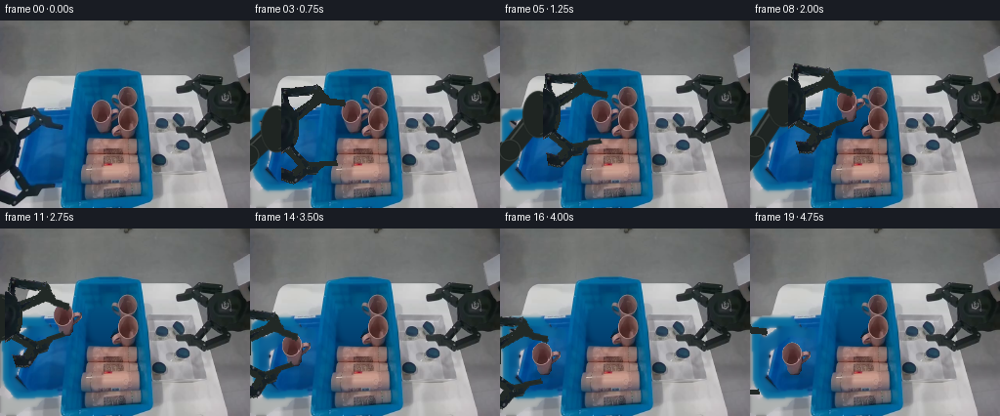
展开代码变化
--- 上一保存版本
+++ 本次保存版本
@@ -23,6 +23,7 @@
up_hole=polygon([(7,101),(29,99),(32,98),(30,102),(24,107),(13,114),(8,107)])
up_region*=1-up_hole
lo_region=polygon([(-3,145),(8,148),(18,159),(24,165),(28,168),(39,167),(56,166),(57,171),(43,172),(39,175),(35,180),(26,180),(16,188),(12,190),(8,189),(-3,185),(-3,172),(10,177),(17,171),(8,161),(0,154)])
+lo_region*=1-polygon([(1,158),(8,162),(14,171),(8,176),(0,174)])
palm_region=polygon([(-3,105),(3,108),(10,114),(15,120),(17,126),(17,140),(14,149),(10,153),(4,157),(-3,161)])
robot_mask=np.maximum.reduce([up_region,lo_region,palm_region])
up_mask=up_region*(1-palm_region)
@@ -50,6 +51,7 @@
clean=a.copy()
# Extend the removal matte just enough to eliminate the stationary edge fringe.
remove=grow(robot_mask,2)
+remove=np.maximum(remove,polygon([(11,146),(17,146),(23,156),(25,165),(29,172),(23,175),(17,168),(12,159)]))
# Remove the cast shadow directly beside the original left-hand hardware.
clean=clean*(1-remove[:,:,None])+replacement*remove[:,:,None]
@@ -91,15 +93,15 @@
# RGBA sprites; each link is rotated, not distorted.
def sprite(mask):
rgb=a.copy()
- invalid=(rgb[:,:,2]>rgb[:,:,0]+17)|(rgb.min(2)>86)
+ invalid=(rgb[:,:,2]>rgb[:,:,0]+17)|(rgb.min(2)>148)
rgb[invalid]=[34,41,38]
- return Image.fromarray(np.dstack([np.uint8(rgb),np.uint8(np.clip(mask,0,1)*255)]))
+ return Image.fromarray(np.dstack([np.uint8(rgb),np.asarray(Image.fromarray(np.uint8(np.clip(mask,0,1)*255)).filter(ImageFilter.GaussianBlur(.28)))]))
upper=sprite(up_mask);lower=sprite(lo_mask);palm=sprite(palm_mask)
# Remove any blue from semi-transparent edge pixels in the mug sprite.
mug_rgb=a.copy(); alpha=np.maximum(mug_alpha[:,:,None],.2)
back=np.clip(fill,0,255)
mug_rgb=np.clip((a-back*(1-mug_alpha[:,:,None]))/alpha,0,255)
-mug=Image.fromarray(np.dstack([np.uint8(mug_rgb),np.uint8(mug_alpha*255)]),'RGBA')
+mug=Image.fromarray(np.dstack([np.uint8(mug_rgb),np.uint8(mug_alpha*255)]))
# Super-sampled geometric connecting forearm hidden beneath the photographed palm.
def draw_arm(canvas,dx,dy):
@@ -116,11 +118,17 @@
rod(anchor,elbow,12,(34,39,37,255));rod(elbow,wrist,10,(31,37,35,255))
for p,r in [(elbow,11),(wrist,14)]:
x,y=p*S;d.ellipse((x-r*S,y-r*S,x+r*S,y+r*S),fill=(31,37,34,255),outline=(57,63,59,255),width=S)
- # The portion behind the reference palm extends the clipped silhouette naturally.
- cx,cy=(dx-6)*S,(dy+134)*S
- d.ellipse((cx-15*S,cy-24*S,cx+17*S,cy+24*S),fill=(31,37,34,255),outline=(44,50,46,255),width=S)
- d.arc((cx-12*S,cy-21*S,cx+14*S,cy+21*S),-80,80,fill=(59,65,58,255),width=S)
canvas.alpha_composite(lay.resize((W,H),Image.Resampling.LANCZOS).filter(ImageFilter.GaussianBlur(.35)))
+ # Reconstruct the clipped back half of the rigid palm by reflecting its
+ # photographed front surface. This retains its observed metal shading.
+ lx=xx-dx;ly=yy-dy
+ sx=np.clip(np.rint(np.abs(lx+3)-3).astype(int),0,17)
+ sy=np.clip(np.rint(ly).astype(int),0,H-1)
+ pm=palm_mask[sy,sx]
+ pm*=((ly>=105)&(ly<=161)&(lx>=-23)&(lx<=17))
+ col=a[sy,sx].copy()
+ palm_img=Image.fromarray(np.dstack([np.uint8(col),np.uint8(pm*255)]))
+ canvas.alpha_composite(palm_img)
def transform(im,dx,dy,angle=0,pivot=(0,0)):
th=math.radians(angle);c=math.cos(th);s=math.sin(th)
@@ -148,14 +156,14 @@
frames.append(np.asarray(SOURCE).copy());continue
carry=i>=7
bg=clean_mug if carry else clean
- canvas=Image.fromarray(np.uint8(np.clip(bg,0,255)),'RGB').convert('RGBA')
+ canvas=Image.fromarray(np.uint8(np.clip(bg,0,255))).convert('RGBA')
if carry:
mx,my=(dx-44,dy+38) if i<=15 else (-61,35)
lift=max(0,-my)
shadow(canvas,104+mx,114+my+min(8,lift*.7),lift)
canvas.alpha_composite(transform(mug,mx,my))
draw_arm(canvas,dx,dy)
- canvas.alpha_composite(transform(palm,dx,dy))
+ # Full palm is reconstructed above from the observed portion.
canvas.alpha_composite(transform(upper,dx,dy,ua,(1,117)))
canvas.alpha_composite(transform(lower,dx,dy,la,(1,150)))
frames.append(np.asarray(canvas.convert('RGB')))
候选 04播放与检查图
可观测工具轨迹
实际执行的命令与返回图片。
命令 1exit 0
/bin/bash -lc 'ls -la && cat prompt.txt && cat GENERATION_RULES.md'
命令 2exit 0
/bin/bash -lc 'cat task_spec.json && cat artifact_io.py && find . -maxdepth 2 -type f'
命令 3exit 0
/bin/bash -lc "python - <<'PY'
from PIL import Image
im=Image.open('first_frame.png'); im.resize((1024,768)).save('.tmp/large.png')
PY"命令 4exit 0
/bin/bash -lc "python - <<'PY'
from PIL import Image,ImageDraw
im=Image.open('first_frame.png').resize((1024,768))
d=ImageDraw.Draw(im)
for x in range(0,256,10):
d.line((x*4,0,x*4,768),fill=(190,180,180),width=1); d.text((x*4+2,0),str(x),fill=(255,100,100))
for y in range(0,192,10):
d.line((0,y*4,1024,y*4),fill=(190,180,180),width=1);d.text((0,y*4+2),str(y),fill=(255,100,100))
im.save('.tmp/grid.png')
PY"命令 5exit 0
/bin/bash -lc "python - <<'PY'
from PIL import Image
im=Image.open('first_frame.png')
im.crop((80,65,145,123)).resize((650,580)).save('.tmp/mugs.png')
im.crop((0,80,78,192)).resize((468,672)).save('.tmp/gripper.png')
PY"命令 6exit 0
/bin/bash -lc "python - <<'PY'
from PIL import Image
im=Image.open('first_frame.png');im.resize((1024,768),Image.Resampling.NEAREST).save('.tmp/nearest.png')
PY"命令 7exit 0
/bin/bash -lc "python - <<'PY'
from PIL import Image, ImageDraw
im=Image.open('first_frame.png').crop((0,85,70,192)).resize((700,1070),Image.Resampling.NEAREST)
d=ImageDraw.Draw(im)
for x in range(0,70,5):
d.line((x*10,0,x*10,1070),fill=(130,130,130),width=1);d.text((x*10+2,0),str(x),fill='red')
for y in range(85,192,5):
d.line((0,(y-85)*10,700,(y-85)*10),fill=(130,130,130),width=1);d.text((0,(y-85)*10+1),str(y),fill='red')
im.save('.tmp/left_grid.png')
PY"命令 8exit 0
/bin/bash -lc "cat > generate.py <<'PY'
from pathlib import Path
import math
import numpy as np
from PIL import Image, ImageDraw, ImageFilter
from artifact_io import save
ROOT=Path(__file__).resolve().parent
W,H=256,192
SOURCE=Image.open(ROOT/'first_frame.png').convert('RGB')
a=np.asarray(SOURCE).astype(float)
yy,xx=np.mgrid[:H,:W]
def polygon(points):
im=Image.new('L',(W,H));ImageDraw.Draw(im).polygon(points,fill=255)
return np.asarray(im).astype(float)/255
def grow(mask, n=1):
return np.asarray(Image.fromarray(np.uint8(mask*255)).filter(ImageFilter.MaxFilter(n*2+1))).astype(float)/255
# Independent rigid link groups cut from the reference image.
up_region=polygon([(-3,94),(4,90),(34,87),(43,94),(50,100),(65,104),(65,111),(49,112),(39,107),(19,125),(5,127),(-3,116)])
lo_region=polygon([(-3,147),(9,147),(19,161),(29,166),(57,165),(58,172),(39,174),(31,179),(23,181),(16,189),(8,191),(-3,186),(-3,174),(9,178),(18,171),(1,159)])
palm_region=polygon([(-3,107),(5,109),(14,118),(17,124),(18,140),(13,152),(4,158),(-3,160)])
# The object's black, graphite surface is cleanly separated from the blue tray.
dark=((a[:,:,2]<81)&(a[:,:,1]<82)&(a[:,:,0]<84)).astype(float)
robot_region=np.maximum.reduce([up_region,lo_region,palm_region])
robot_core=dark*robot_region
robot_mask=grow(robot_core,1)*robot_region
# Retain photographed boundaries and round hardware rather than scaling links.
up_mask=robot_mask*up_region*(1-palm_region)
lo_mask=robot_mask*lo_region*(1-palm_region)
palm_mask=robot_mask*palm_region
# Build the newly exposed table and tray from the visible surfaces in this frame.
# A smoothly extended surface patch is used only where the gripper was originally.
tray_outer=polygon([(12,93),(74,89),(71,150),(65,169),(19,174),(5,151),(5,126)])
tray_inner=polygon([(18,101),(70,98),(66,155),(62,162),(22,166),(11,148),(11,125)])
# Interior blue texture copied from the unoccluded middle of the same tray.
tx=np.clip(27+(xx%28),27,58)
ty=np.clip(115+((yy-100)%42),115,157)
texture=a[ty,tx]
# Very low-amplitude observed shading is preserved in the patch.
blue=np.zeros_like(a);blue[:]=[8,96,140]
blue=blue*.55+texture*.45
blue[:,:,1]+=4*np.clip((xx-8)/60,0,1)
blue[:,:,2]+=3*np.clip((xx-8)/60,0,1)
table=np.zeros_like(a)
for c,base in enumerate([188,191,190]):
table[:,:,c]=base-0.18*(yy-115)-.05*(40-xx)
replacement=table*(1-tray_outer[:,:,None])+np.array([7,109,158])*tray_outer[:,:,None]
replacement=replacement*(1-tray_inner[:,:,None])+blue*tray_inner[:,:,None]
clean=a.copy()
# Extend the removal matte just enough to eliminate the stationary edge fringe.
remove=grow(robot_mask,1)*polygon([(-2,86),(39,85),(68,100),(68,113),(43,112),(20,128),(24,151),(32,163),(60,163),(60,176),(34,182),(19,192),(-2,192)])
clean=clean*(1-remove[:,:,None])+replacement*remove[:,:,None]
# Diffuse along the old occlusion boundary for the native soft camera texture.
# The replacement itself is fixed in every subsequent frame.
blend_region=(remove>.01)
for k in range(100):
nbr=(np.roll(clean,1,0)+np.roll(clean,-1,0)+np.roll(clean,1,1)+np.roll(clean,-1,1))/4
# Keep a weak, geometry-aware anchor to the real blue/table surfaces.
clean[blend_region]=.88*nbr[blend_region]+.12*replacement[blend_region]
# The leftmost pink mug, including its right-facing handle.
mug_poly=polygon([(103,80),(109,81),(113,85),(115,90),(119,90),(122,91),(122,96),(118,100),(113,104),(113,110),(110,114),(104,116),(99,114),(96,108),(94,101),(92,96),(93,89),(97,84)])
contrast=a[:,:,0]-a[:,:,2]
mug_alpha=np.clip((contrast+8)/19,0,1)*mug_poly
# Exclude the blue negative space within the handle.
mug_alpha[mug_poly==0]=0
mug_remove=grow((mug_alpha>.1).astype(float),1)
# Fit a smooth bin-floor color to nearby blue pixels, never to other products.
blue_samples=(xx>=85)&(xx<=123)&(yy>=75)&(yy<=120)&(a[:,:,2]>a[:,:,0]+32)&(mug_remove==0)
features=np.stack([np.ones_like(xx), (xx-103)/25,(yy-99)/25,((xx-103)/25)**2,((yy-99)/25)**2,((xx-103)*(yy-99))/625],-1)
coef=np.linalg.lstsq(features[blue_samples],a[blue_samples],rcond=None)[0]
fill=features@coef
fill=np.clip(fill,[0,45,67],[32,112,153])
# Only the mug silhouette and its immediate contact shadow become bin surface.
mug_remove*=polygon([(91,79),(115,79),(124,88),(124,101),(115,110),(115,118),(95,118),(91,101)])
clean_mug=clean*(1-mug_remove[:,:,None])+fill*mug_remove[:,:,None]
# RGBA sprites; each link is rotated, not distorted.
def sprite(mask):
return Image.fromarray(np.dstack([np.uint8(a),np.uint8(np.clip(mask,0,1)*255)]),'RGBA')
upper=sprite(up_mask);lower=sprite(lo_mask);palm=sprite(palm_mask)
# Remove any blue from semi-transparent edge pixels in the mug sprite.
mug_rgb=a.copy(); alpha=np.maximum(mug_alpha[:,:,None],.2)
back=np.clip(fill,0,255)
mug_rgb=np.clip((a-back*(1-mug_alpha[:,:,None]))/alpha,0,255)
mug=Image.fromarray(np.dstack([np.uint8(mug_rgb),np.uint8(mug_alpha*255)]),'RGBA')
# Super-sampled geometric connecting forearm hidden beneath the photographed palm.
def draw_arm(canvas,dx,dy):
S=3
lay=Image.new('RGBA',(W*S,H*S));d=ImageDraw.Draw(lay)
wrist=np.array([dx-5,dy+134.])
anchor=np.array([-27.,169.])
elbow=np.array([max(-16.,dx-34.),146+dy*.35])
def rod(p,q,r,color):
p=np.array(p)*S;q=np.array(q)*S
v=q-p;n=np.array([-v[1],v[0]])/(np.linalg.norm(v)+1e-6)*r*S
d.polygon([tuple(p+n),tuple(q+n),tuple(q-n),tuple(p-n)],fill=color)
d.line([tuple(p-n*.6),tuple(q-n*.6)],fill=(66,71,67,255),width=2*S)
rod(anchor,elbow,12,(34,39,37,255));rod(elbow,wrist,10,(31,37,35,255))
for p,r in [(elbow,11),(wrist,14)]:
x,y=p*S;d.ellipse((x-r*S,y-r*S,x+r*S,y+r*S),fill=(31,37,34,255),outline=(57,63,59,255),width=S)
# The portion behind the reference palm extends the clipped silhouette naturally.
cx,cy=(dx-6)*S,(dy+134)*S
d.ellipse((cx-15*S,cy-24*S,cx+17*S,cy+24*S),fill=(31,37,34,255),outline=(44,50,46,255),width=S)
d.arc((cx-12*S,cy-21*S,cx+14*S,cy+21*S),-80,80,fill=(59,65,58,255),width=S)
canvas.alpha_composite(lay.resize((W,H),Image.Resampling.LANCZOS))
def transform(im,dx,dy,angle=0,pivot=(0,0)):
th=math.radians(angle);c=math.cos(th);s=math.sin(th)
px,py=pivot
# inverse of rotation about a fixed mechanical pin, followed by translation
coeff=(c,s,px-c*(px+dx)-s*(py+dy),-s,c,py+s*(px+dx)-c*(py+dy))
return im.transform((W,H),Image.Transform.AFFINE,coeff,Image.Resampling.BICUBIC)
def shadow(canvas,cx,cy,lift=0):
layer=Image.new('RGBA',(W,H));d=ImageDraw.Draw(layer)
spread=1+lift*.03;op=int(50/(1+lift*.045))
d.ellipse((cx-10*spread,cy-3*spread,cx+10*spread,cy+3*spread),fill=(7,17,21,op))
canvas.alpha_composite(layer.filter(ImageFilter.GaussianBlur(2+lift*.03)))
# Palm travel and articulated jaw closure. The mug is rigidly attached for carry.
poses=[(0,0,0,0),(7,-4,0,0),(19,-12,0,0),(32,-23,0,0),
(41,-33,0,0),(44,-38,6,-8),(44,-38,14,-18),
(44,-43,14,-18),(39,-49,14,-18),(29,-50,14,-18),
(17,-47,14,-18),(5,-43,14,-18),(-6,-34,14,-18),
(-13,-23,14,-18),(-17,-12,14,-18),(-17,-3,14,-18),
(-17,-3,8,-10),(-26,-7,3,-4),(-38,-5,0,0),(-48,-2,0,0)]
frames=[]
for i,(dx,dy,ua,la) in enumerate(poses):
if i==0:
frames.append(np.asarray(SOURCE).copy());continue
carry=i>=7
bg=clean_mug if carry else clean
canvas=Image.fromarray(np.uint8(np.clip(bg,0,255)),'RGB').convert('RGBA')
if carry:
mx,my=(dx-44,dy+38) if i<=15 else (-61,35)
lift=max(0,-my)
shadow(canvas,104+mx,114+my+min(8,lift*.7),lift)
canvas.alpha_composite(transform(mug,mx,my))
draw_arm(canvas,dx,dy)
canvas.alpha_composite(transform(palm,dx,dy))
canvas.alpha_composite(transform(upper,dx,dy,ua,(1,117)))
canvas.alpha_composite(transform(lower,dx,dy,la,(1,150)))
frames.append(np.asarray(canvas.convert('RGB')))
frames=np.asarray(frames,dtype=np.uint8)
save(frames,ROOT)
PY
python generate.py"命令 9exit 0
/bin/bash -lc "python - <<'PY'
from PIL import Image
for i in [1,6,8,15,19]:
Image.open(f'frames/{i:02}.png').resize((768,576)).save(f'.tmp/frame{i}.png')
PY"命令 10exit 0
/bin/bash -lc "python - <<'PY'
from PIL import Image, ImageDraw
import numpy as np
im=Image.open('first_frame.png');a=np.array(im)
for y in [80,90,100,110,115]:
print(y,[(x,a[y,x].tolist()) for x in [85,88,90,92,94,98,102,110,114,118,120]])
c=im.crop((88,75,125,121)).resize((592,736),Image.Resampling.NEAREST);d=ImageDraw.Draw(c)
for x in range(90,126,5):
d.line(((x-88)*16,0,(x-88)*16,736),fill=(120,150,100));d.text(((x-88)*16+2,0),str(x),fill='red')
for y in range(75,122,5):
d.line((0,(y-75)*16,592,(y-75)*16),fill=(120,150,100));d.text((0,(y-75)*16+2),str(y),fill='red')
c.save('.tmp/mug_grid.png')
PY"命令 11exit 0
/bin/bash -lc "cp generate.py .tmp/generate_v1.py
python - <<'PY'
p='generate.py'
s=open(p).read()
start=s.index('up_region=')
end=s.index('# Build the newly', start)
s=s[:start]+'''# Hand-traced link boundaries preserve complete rigid pieces and joint holes.
up_region=polygon([(-3,91),(4,92),(33,89),(36,88),(40,91),(44,97),(48,100),(49,102),(64,104),(65,108),(64,111),(60,110),(49,109),(42,107),(39,108),(18,124),(10,127),(5,122),(0,116),(-3,110)])
up_hole=polygon([(7,101),(29,99),(32,98),(30,102),(24,107),(13,114),(8,107)])
up_region*=1-up_hole
lo_region=polygon([(-3,145),(8,148),(18,159),(24,165),(28,168),(39,167),(56,166),(57,171),(43,172),(39,175),(35,180),(26,180),(16,188),(12,190),(8,189),(-3,185),(-3,172),(10,177),(17,171),(8,161),(0,154)])
palm_region=polygon([(-3,105),(3,108),(10,114),(15,120),(17,126),(17,140),(14,149),(10,153),(4,157),(-3,161)])
robot_mask=np.maximum.reduce([up_region,lo_region,palm_region])
up_mask=up_region*(1-palm_region)
lo_mask=lo_region*(1-palm_region)
palm_mask=palm_region
''' +s[end:]
s=s.replace(\"tray_outer=polygon([(12,93),(74,89),(71,150),(65,169),(19,174),(5,151),(5,126)])\", \"tray_outer=polygon([(2,98),(10,91),(74,89),(70,171),(18,174),(8,169),(3,154)])\")
s=s.replace(\"tray_inner=polygon([(18,101),(70,98),(66,155),(62,162),(22,166),(11,148),(11,125)])\", \"tray_inner=polygon([(13,103),(19,100),(70,98),(66,162),(23,168),(15,165),(9,151),(9,116)])\")
rstart=s.index('remove=grow(robot_mask')
rend=s.index('\\nclean=clean*',rstart)
s=s[:rstart]+'''remove=grow(robot_mask,2)
# Remove the cast shadow directly beside the original left-hand hardware.
''' +s[rend:]
s=s.replace('mug_alpha=np.clip((contrast+8)/19,0,1)*mug_poly','mug_alpha=np.clip((contrast+45)/31,0,1)*mug_poly')
s=s.replace('fill=features@coef\\nfill=np.clip(fill,[0,45,67],[32,112,153])', '''fill=features@coef
# Floor patch under the removed cup: continuous diffuse bin illumination.
fill[:,:,0]=2
fill[:,:,1]=78-.46*(yy-84)
fill[:,:,2]=126-.43*(yy-84)
fill=np.clip(fill,[0,45,67],[32,112,153])''')
fstart=s.index('mug_remove*=polygon')
fend=s.index('\\n# RGBA sprites',fstart)
s=s[:fstart]+'''# A wider soft hole includes the cup's floor shadow, while the adjacent mug is protected.
hole=polygon([(98,79),(109,79),(115,85),(116,89),(123,89),(124,96),(122,101),(115,105),(115,114),(113,118),(99,118),(93,114),(91,108),(89,99),(91,87)])
soft=np.asarray(Image.fromarray(np.uint8(hole*255)).filter(ImageFilter.GaussianBlur(2.4))).astype(float)/255
mug_remove=np.maximum(soft,mug_remove)
protect=polygon([(124,86),(142,86),(145,125),(115,125),(115,114),(113,111),(115,108),(117,106),(120,105),(121,98)])
mug_remove*=1-protect
clean_mug=clean*(1-mug_remove[:,:,None])+fill*mug_remove[:,:,None]
''' +s[fend:]
s=s.replace(\"return Image.fromarray(np.dstack([np.uint8(a),np.uint8(np.clip(mask,0,1)*255)]),'RGBA')\",'''rgb=a.copy()
invalid=(rgb[:,:,2]>rgb[:,:,0]+17)|(rgb.min(2)>86)
rgb[invalid]=[34,41,38]
return Image.fromarray(np.dstack([np.uint8(rgb),np.uint8(np.clip(mask,0,1)*255)]))''')
# smooth new mechanical arm with lighting, avoid flat black outline
s=s.replace(\"canvas.alpha_composite(lay.resize((W,H),Image.Resampling.LANCZOS))\", \"canvas.alpha_composite(lay.resize((W,H),Image.Resampling.LANCZOS).filter(ImageFilter.GaussianBlur(.35)))\")
open(p,'w').write(s)
PY
python generate.py"命令 12exit 0
/bin/bash -lc "python - <<'PY'
from PIL import Image
for i in [1,6,8,15,19]:Image.open(f'frames/{i:02}.png').resize((768,576)).save(f'.tmp/frame{i}b.png')
PY"命令 13exit 0
/bin/bash -lc "cp generate.py .tmp/generate_v2.py
python - <<'PY'
p='generate.py';s=open(p).read()
s=s.replace('rgb.min(2)>86','rgb.min(2)>148')
s=s.replace(\"np.uint8(np.clip(mask,0,1)*255)]))\",\"np.asarray(Image.fromarray(np.uint8(np.clip(mask,0,1)*255)).filter(ImageFilter.GaussianBlur(.28)))]))\")
s=s.replace(\"up_hole=polygon([(7,101),(29,99),(32,98),(30,102),(24,107),(13,114),(8,107)])\", \"up_hole=polygon([(7,101),(29,99),(32,98),(30,102),(24,107),(13,114),(8,107)])\")
s=s.replace(\"lo_region=polygon\", \"lo_region=polygon\",1)
s=s.replace(\"palm_region=polygon\", \"lo_region*=1-polygon([(1,158),(8,162),(14,171),(8,176),(0,174)])\\npalm_region=polygon\",1)
s=s.replace(\"remove=grow(robot_mask,2)\", \"remove=grow(robot_mask,2)\\nremove=np.maximum(remove,polygon([(11,146),(17,146),(23,156),(25,165),(29,172),(23,175),(17,168),(12,159)]))\")
start=s.index(' # The portion behind the reference palm')
end=s.index('\\ndef transform',start)
s=s[:start]+''' canvas.alpha_composite(lay.resize((W,H),Image.Resampling.LANCZOS).filter(ImageFilter.GaussianBlur(.35)))
# Reconstruct the clipped back half of the rigid palm by reflecting its
# photographed front surface. This retains its observed metal shading.
lx=xx-dx;ly=yy-dy
sx=np.clip(np.rint(np.abs(lx+3)-3).astype(int),0,17)
sy=np.clip(np.rint(ly).astype(int),0,H-1)
pm=palm_mask[sy,sx]
pm*=((ly>=105)&(ly<=161)&(lx>=-23)&(lx<=17))
col=a[sy,sx].copy()
palm_img=Image.fromarray(np.dstack([np.uint8(col),np.uint8(pm*255)]))
canvas.alpha_composite(palm_img)
''' +s[end:]
s=s.replace(\"canvas.alpha_composite(transform(palm,dx,dy))\", \"# Full palm is reconstructed above from the observed portion.\")
s=s.replace(\"mug=Image.fromarray(np.dstack([np.uint8(mug_rgb),np.uint8(mug_alpha*255)]),'RGBA')\",\"mug=Image.fromarray(np.dstack([np.uint8(mug_rgb),np.uint8(mug_alpha*255)]))\")
s=s.replace(\"Image.fromarray(np.uint8(np.clip(bg,0,255)),'RGB')\",\"Image.fromarray(np.uint8(np.clip(bg,0,255)))\")
open(p,'w').write(s)
PY
python generate.py
python - <<'PY'
from PIL import Image
for i in [1,6,19]:Image.open(f'frames/{i:02}.png').resize((768,576)).save(f'.tmp/frame{i}c.png')
PY"命令 14exit 0
/bin/bash -lc "python - <<'PY'
from PIL import Image
import numpy as np
f=np.array(Image.open('frames/19.png'));a=np.array(Image.open('first_frame.png'))
for y in range(145,172):
xs=np.where((f[y,:75,0]<65)&(f[y,:75,1]<65)&(f[y,:75,2]<75))[0]
if len(xs):print(y,xs.tolist())
PY"命令 15exit 0
/bin/bash -lc "command -v ffmpeg || true
python - <<'PY'
import numpy as np
from PIL import Image
p=np.load('pixels.npz')['pixels']
a=np.array(Image.open('first_frame.png').convert('RGB'),dtype=np.uint32)
orig=(a[:,:,0]<<16)|(a[:,:,1]<<8)|a[:,:,2]
assert p.shape==(192,256,20)
assert np.array_equal(p[:,:,0],orig)
assert len(list(__import__('pathlib').Path('frames').glob('*.png')))==20
print('Verified: 20 RGB frames at 256x192; frame 00 pixel-identical.')
PY"视觉工具实际返回图片 1
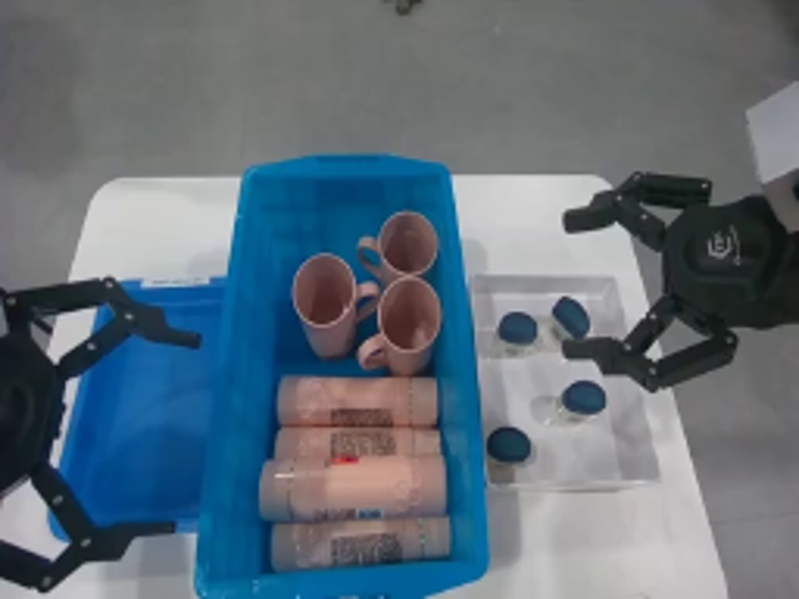
视觉工具实际返回图片 2
视觉工具实际返回图片 3
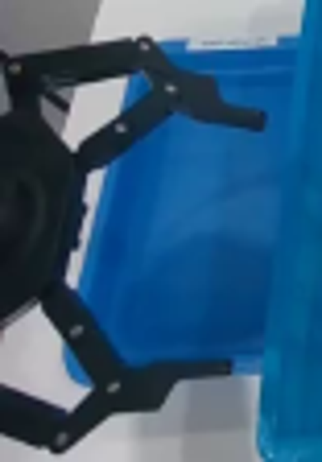
视觉工具实际返回图片 4
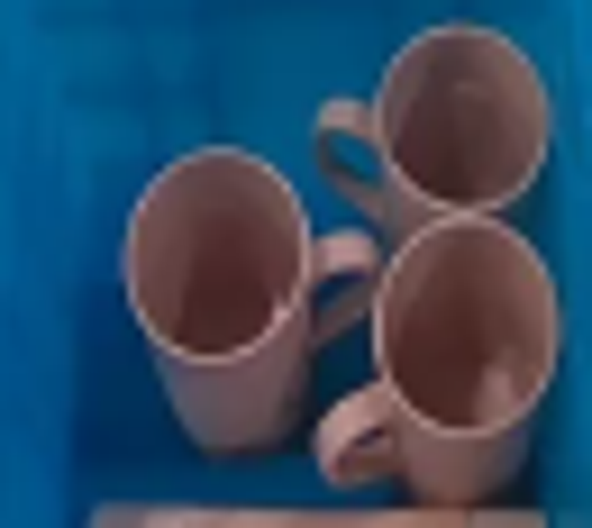
视觉工具实际返回图片 5

视觉工具实际返回图片 6
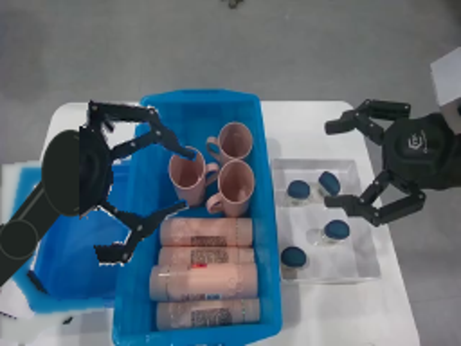
视觉工具实际返回图片 7
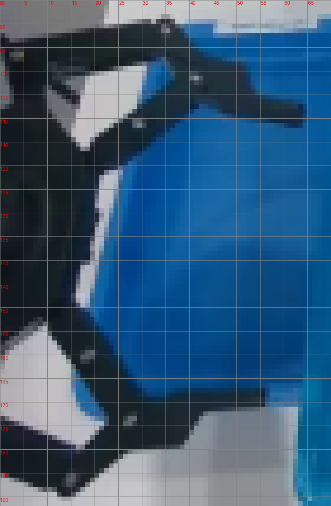
视觉工具实际返回图片 8
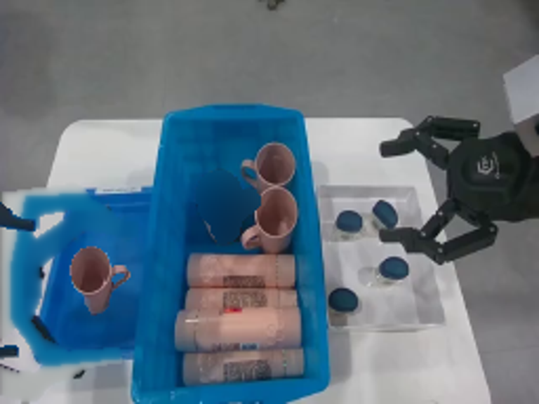
视觉工具实际返回图片 9
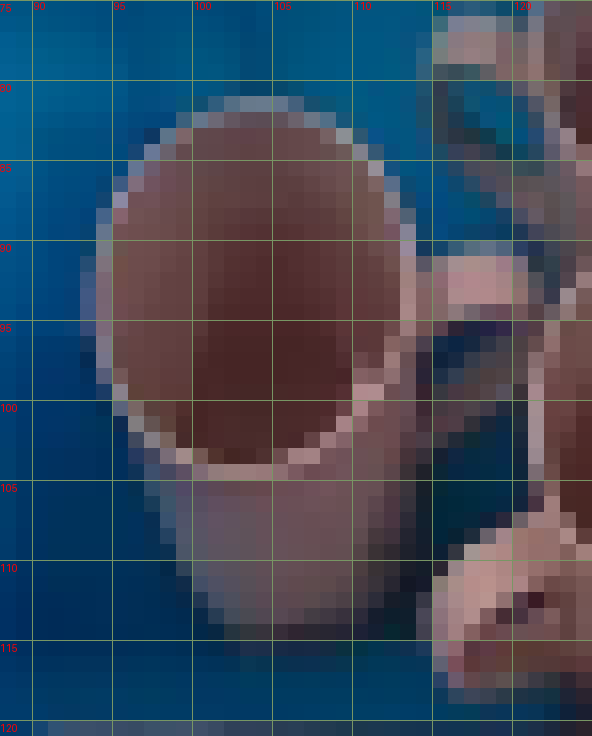
视觉工具实际返回图片 10

视觉工具实际返回图片 11
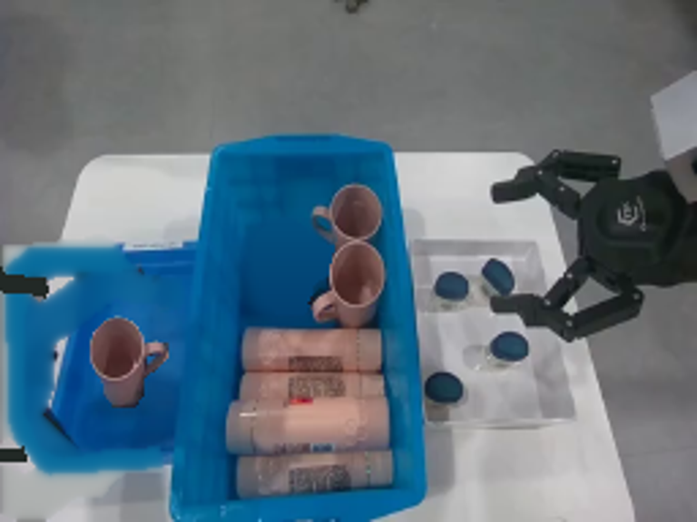
视觉工具实际返回图片 12
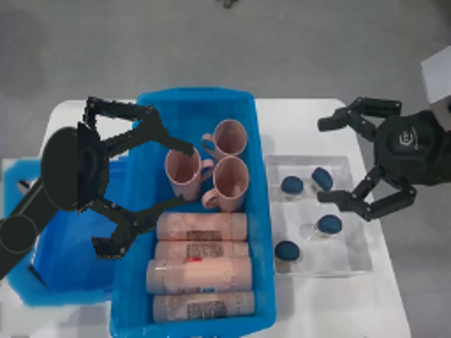
视觉工具实际返回图片 13
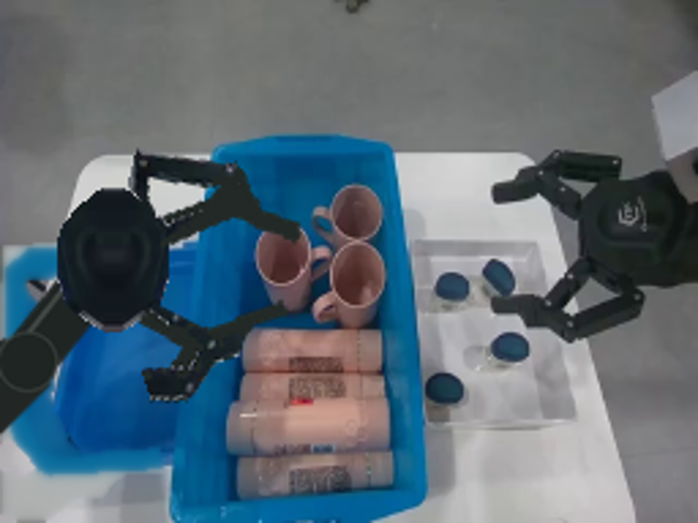
视觉工具实际返回图片 14
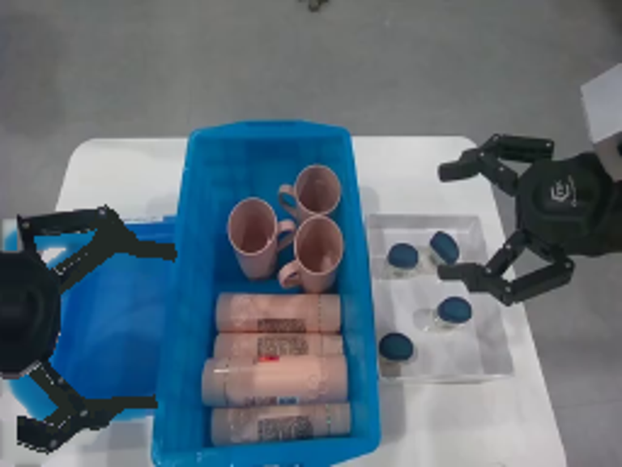
视觉工具实际返回图片 15
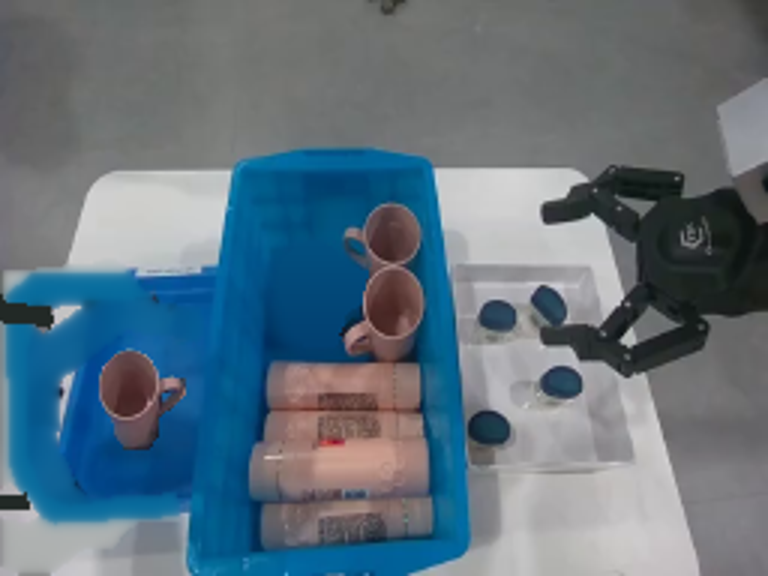
保存候选 4 份；完成命令 15 次；可验证图片返回 15 张。原始 API 响应与完整日志保留在本地。